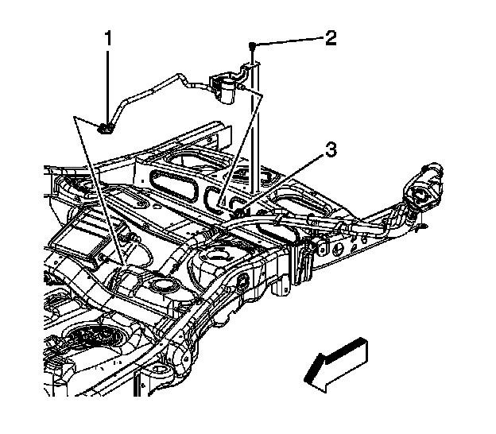

Emission - MIL ON/DTC's P0442/P0446/P0455/P0449
TECHNICALBulletin No.: 09-06-04-028C
Date: April 07, 2011
Subject: Malfunction Indicator Lamp (MIL) Illuminated, DTCs P0442, P0446, P0455 or P0449 Set - Fuel Tank Hard to Fill - Moisture, Water, Corrosion at Evaporative Emissions (EVAP) Canister Vent Solenoid (CVS) Valve (Install Revised EVAP CVS Valve Assembly and Jumper Harness)
Models:
2007-2010 Cadillac Escalade, Escalade ESV, Escalade EXT
2007-2010 Chevrolet Avalanche, Suburban (1500 Series), Tahoe
2007-2010 GMC Yukon, Yukon XL (1500 Series), Yukon Denali, Yukon XL Denali
Excluding 2008-2009 Hybrid Utility Vehicles
Attention:
The revised Evaporative Emissions (EVAP) canister vent solenoid (CVS) valve assembly comes with two tie-straps attached. These two tie-straps will be used to attach the EVAP CVS valve vent pipe to the fuel tank filler pipe.
Supercede:
This bulletin is being revised to add an Attention statement and update the Subject, Correction, Parts and Warranty Information. Please discard Corporate Bulletin Number 09-06-04-028B (Section 06 - Engine/Propulsion System).
Condition
- Some customers may comment that the fuel tank is hard to fill.
- They may also comment that the malfunction indicator lamp (MIL) is illuminated.
- Upon investigation, one or more of the following DTCs P0442, 0446, P0455 or P0449 may be set as Current or in History.
- During diagnosis there may be evidence of water intrusion at the evaporative emissions (EVAP) canister vent solenoid (CVS) valve.
Cause
The EVAP CVS valve draws fresh air into the EVAP system through a vent attached at the top of the conduit that is secured to the fuel filler pipe. Under certain operating conditions, dirt and dust intrusion into the CVS fresh air intake/venting system may result in restricted air flow.
Under certain operating conditions, if water is ingested into the EVAP CVS fresh air intake/venting system, it may reach the CVS valve causing corrosion in the CVS valve and may cause restrictions in the fresh air intake path when the CVS valve is in the closed position.
Ingested water will also collect in the CVS valve cyclonic filter in order to protect the EVAP canister. However if the capacity of the cyclonic filter is exceeded, this may result in water entering the EVAP canister and cause an additional restriction during refueling.
Correction
Note
DO NOT replace the EVAP canister assembly for this concern unless it fails the leak test or it has ingested excessive amounts of dirt, dust or water.
After following the published SI diagnostics and determining that the EVAP CVS valve is the cause of the MIL illumination or the hard to fill symptom, replace the existing EVAP CVS valve assembly with the new revised design assembly.
This revised EVAP CVS valve assembly is a sealed unit that is vented through a remote pre-filter that is designed to be mounted atop the fuel filler housing. To ensure correct installation follow the procedure outlined below.
1. Turn OFF the ignition, and all electrical components, including the scan tool.
Note
DO NOT remove the fuel fill cap in order to prevent any debris from entering the fill pipe.
2. Remove the fuel tank filler pipe housing to body TORX(R) screws (1) and retainer (2).
3. Raise and support the vehicle at the appropriate height in order to gain access to the spare tire assembly. Refer to Lifting and Jacking the Vehicle in SI.
4. Remove the spare tire and wheel assembly.

5. Disconnect the vehicle chassis wiring harness electrical connector (1) from the CVS valve.

Important
Clean the EVAP line connections and surrounding areas prior to disconnecting in order to avoid possible EVAP system contamination.
6. Disconnect the CVS valve assembly quick connect fitting (1) from the EVAP canister. Refer to Plastic Collar Quick Connect Fitting Service in SI.
7. Remove the CVS valve assembly bracket to spare tire cross-car support retaining bolt (2). DO NOT discard the bolt.
8. Remove the tie-straps and the CVS valve assembly black conduit from the fuel tank filler pipe assembly.
9. Remove the complete CVS valve assembly from the vehicle and discard.
10. Lower the fuel tank filler pipe housing and the fuel tank fill pipe enough to drill a hole into the housing.
11. Drill a 7 mm (0.27 in) hole in the fuel tank filler pipe housing approximately 15 mm (0.59 in) back from the base of the flange and 15 mm (0.59 in) rearward of the forward housing attachment clip as shown.
Remove any plastic burrs that remain after drilling.
12. Place the revised EVAP CVS valve assembly, P/N 20995472, into position in the vehicle. Ensure the EVAP CVS valve canister pipe is positioned ABOVE the cross-car brace, just forward of the CVS valve.
13. Position the CVS valve bracket anti-rotation tab (1) and fully seat it to the spare tire cross-car support.
14. Install the bolt for the CVS valve assembly bracket, back into the original position in the spare tire cross-car support.
Tighten
Tighten the bolt to 12 Nm (106 lb in).
15. Connect the CVS valve assembly jumper harness, P/N 19257603 between the CVS valve and the vehicle chassis wiring harness electrical connector.
16. Secure the clip on the CVS valve jumper harness electrical connector to the spare tire cross-car support as shown.
Note
The revised CVS valve assembly EVAP canister pipe (1) MUST BE ROUTED ABOVE the cross-car brace, just forward of the CVS valve and BELOW the EVAP canister, as shown, rather than above the EVAP canister, as the original pipe was routed.
17. Route the CVS valve assembly EVAP canister pipe above the cross-car brace and below the EVAP canister.
18. Connect the CVS valve assembly canister pipe quick connect fitting to the EVAP canister.
19. Position the CVS valve vent hose along the fuel fill pipe as shown.
1. Position the CVS valve pre-filter on the fuel tank filler pipe housing as shown. Align the hole in the CVS valve pre-filter with the hole that was drilled into the fuel tank filler pipe housing. Install the pushpin, P/N 10121502, from within the fuel tank filler pipe housing securely into the CVS valve pre-filter.
2. In the area near the fuel tank fill pipe to fuel tank fill hose clamp, secure the tie-strap (1) that was provided on the CVS valve vent hose to the fuel tank fill pipe as shown.
3. While holding the CVS valve vent hose and CVS valve pre-filter in position, install one additional tie-strap (2), P/N 11509087, around the CVS valve vent hose only, next to the provided tie-strap (1), on the fuel filler housing side of the strap. While maintaining the proper orientation of the CVS valve pre-filter, secure the additional tie-strap (2) in order to keep the CVS valve vent hose from slipping down, once the fuel filler housing has been raised back to its original position.
4. Secure the other tie-strap that was provided on the CVS valve vent hose to the fuel fill pipe.
20. Raise the fuel tank filler pipe housing, and the fuel tank fill pipe back to its original position. Ensure that the CVS valve pre-filter screen openings are pointing downward as shown.
21. Install the spare tire and wheel assembly.
22. Lower the vehicle.
23. Install the fuel tank filler housing to body TORX(R) screws (1) and retainer (2).
Tighten
Tighten the screws to 2.3 Nm (20 lb in).
24. Use a scan tool to clear any DTCs that may be present.
Parts Information
Warranty Information
For vehicles repaired under warranty, use the table.

Disclaimer